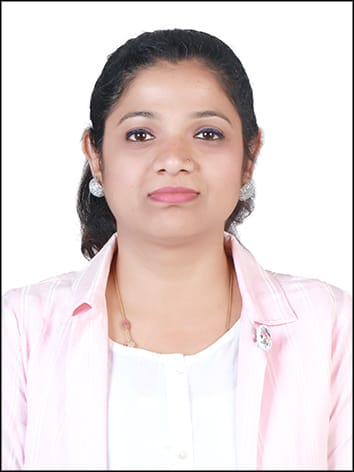
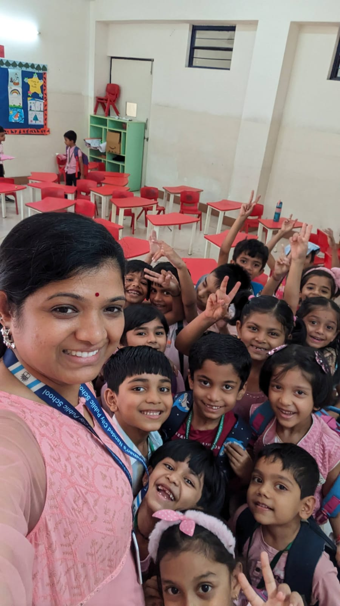

About the Educator
I am Kavitha Sarma, a passionate educator with MBA & B.Ed background focused on innovative, student-centered learning.

MBA Graduate • B.Ed Trainee • Science Educator • Digital Pedagogy Enthusiast
Digital Teaching Portfolio

I am Kavitha Sarma, a passionate educator with MBA & B.Ed background focused on innovative, student-centered learning.